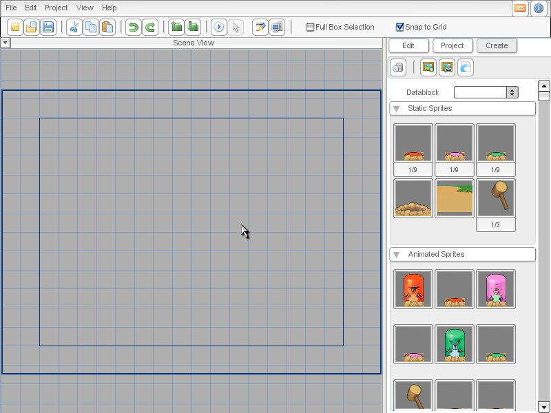
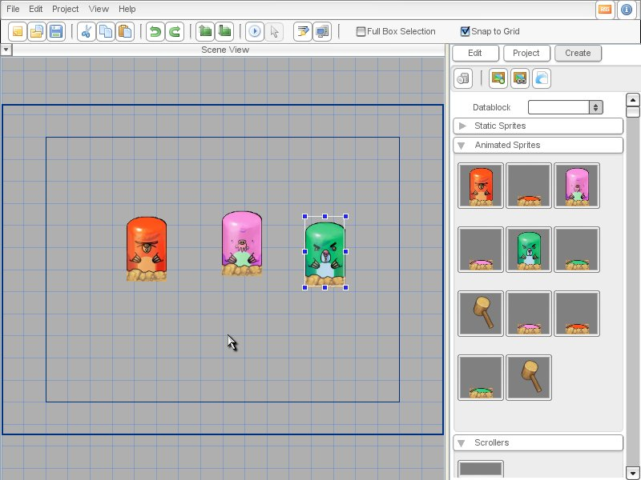
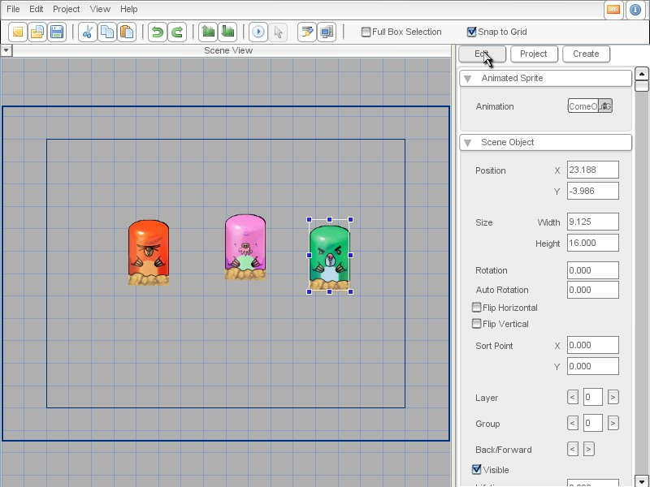
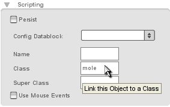
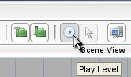

Torque 2D - Whack-A-Mole Tutorial Part 1
In this tutorial you will learn how to create a Whack-A-Mole game using Torque 2D (T2D) Level Builder and some scripting. The tutorial consists of five parts in which we will gradually create a playable game from the ground up.
First things first - Creating a New Project
Part 1 - Create a Mole
Load in our images
Now we will create the first version of the mole. The aim for this level is to put the mole on the screen and make him disappear when clicked on.
First we need to setup the images and Animations for our mole. Import the "moleArt" resource. If you don't know how to add resources, click here.If you don't know how to add resources, click here.
Now your object library should be populated with all of the mole art (as shown in Figure 1.4)
.
Figure 1.4
Putting our mole on the screen
Now we will put the mole on the screen. This is rather easy. Go to the right panel and select the CREATE tab. Next, go down to the Animated Sprites rollout and drag and drop the three mole sprites with heads above-ground into the center of your level (as shown in Figure 1.5).

Figure 1.5
You can test the game going to Project > Run Game. You will probably be told that you have to save the level before you can test it. Save it as level1.t2d in WhackAMole/data/levels/. When you finally test your game, you should see the moles sitting there doing nothing. In the next part of the tutorial, we will change that.
Making our mole disappear
Next we need to make the mole disappear when it is clicked on. To accomplish this we will need some scripting. Close T2D and create a new file called mole.cs in WhackAMole/gameScripts/ and open it in your favorite script editor. Let's first write the function mole::onAdd(). This function will be called automatically when a new mole is created. We use onAdd() here instead of onLevelLoaded() because later on we will be creating moles after the game has been loaded and started. This way, even those moles will be setup correctly. We will use this to set our moles to use "mouse events". Mouse events will allow us to perform an action when we click or drag on our object.
function mole::onAdd(%this)
{
// enable mouse events for the mole so we can easily determine when it is clicked on
%this.setUseMouseEvents( true );
}
Code Sample 1.1
Now let's make the mole clickable. Add this function right after the other one:
function mole::onMouseDown(%this, %modifier, %worldPosition, %mouseClicks)
{
if( %this.getAnimationName() $= ("animMoleComeOut" @ %this.moleColor) )
%this.playAnimation( "animMoleWhacked" @ %this.moleColor );
}
Code Sample 1.2
If the mole is playing the animMoleComeOutXXX animation when you click on it, it will play the animMoleWhackedXXX animation. If you click on the mole while it's sinking into the hole again, it will start playing the animMoleWhackedXXX animation again from the beginning. Note that we append the variable %this.moleColor to the animation names. This variable must hold the color - Red, Green, or Lilac - of the mole. This way the right animation names are generated and we use the same code for moles of all colors. For now we have to set this variable by hand in the level builder but later in the tutorial you will see that this is done automatically. The mole also should disappear when the animation has finished, so we add another function to the end of our file:
function mole::onAnimationEnd(%this)
{
if( %this.getAnimationName() !$= ("animMoleComeOut" @ %this.moleColor) )
%this.safeDelete();
}
Code Sample 1.3
When an animation has completed this function is called. Then we check to make sure that the animation that has just ended is not the animation that is triggered when the mole comes out, if so then the mole is deleted at the end of its animation.
We need to do two things. First we need to make sure the engine knows to run the script file we just created. We can do this with a command called "exec()". This command basically tells the engine that we want a script file included when it runs, otherwise anything in that script won't be utilized. The second thing we have to do is turn on mouse events for the t2dSceneWindow our game runs in (otherwise the mole::onMouseDown() function we specified above will not work). This is done by navigating to the WhackAMole/gameScripts/game.cs file and modifying the startGame() function to look like this (new code is bolded):
function startGame(%level)
{
//exec game scripts
exec("./mole.cs");
// Set The GUI.
Canvas.setContent(mainScreenGui);
Canvas.setCursor(DefaultCursor);
new ActionMap(moveMap);
moveMap.push();
$enableDirectInput = true;
activateDirectInput();
enableJoystick();
// this has been added:
sceneWindow2D.setUseObjectMouseEvents( true );
sceneWindow2D.loadLevel(%level);
}
Code Sample 1.4
Now open the level builder, select one of the mole sprites in the Scene View and go to the EDIT tab to the right (as shown in Figure 1.6).

Figure 1.6
Next, add a dynamic field to the mole called "moleColor" and give it a value
depending on the mole you are editing (either "red", "green", or
"Lilac"). If you don't know how to add dynamic fields, click here.If you don't know how to add dynamic fields, click here.
|
 |
Figure 1.9 |
|
 |
That should be enough to get the mole clickable. Save all files, and click on the Play Level Button (as shown in Figure 1.10) or go to Project > Run Game. |
Now when you click on a mole, first the animMoleWhackedXXX animation should be played then it should disappear altogether.
Revision 2.1